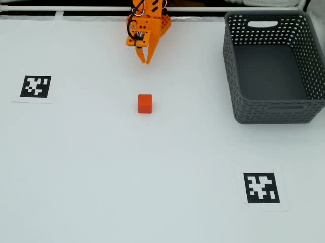
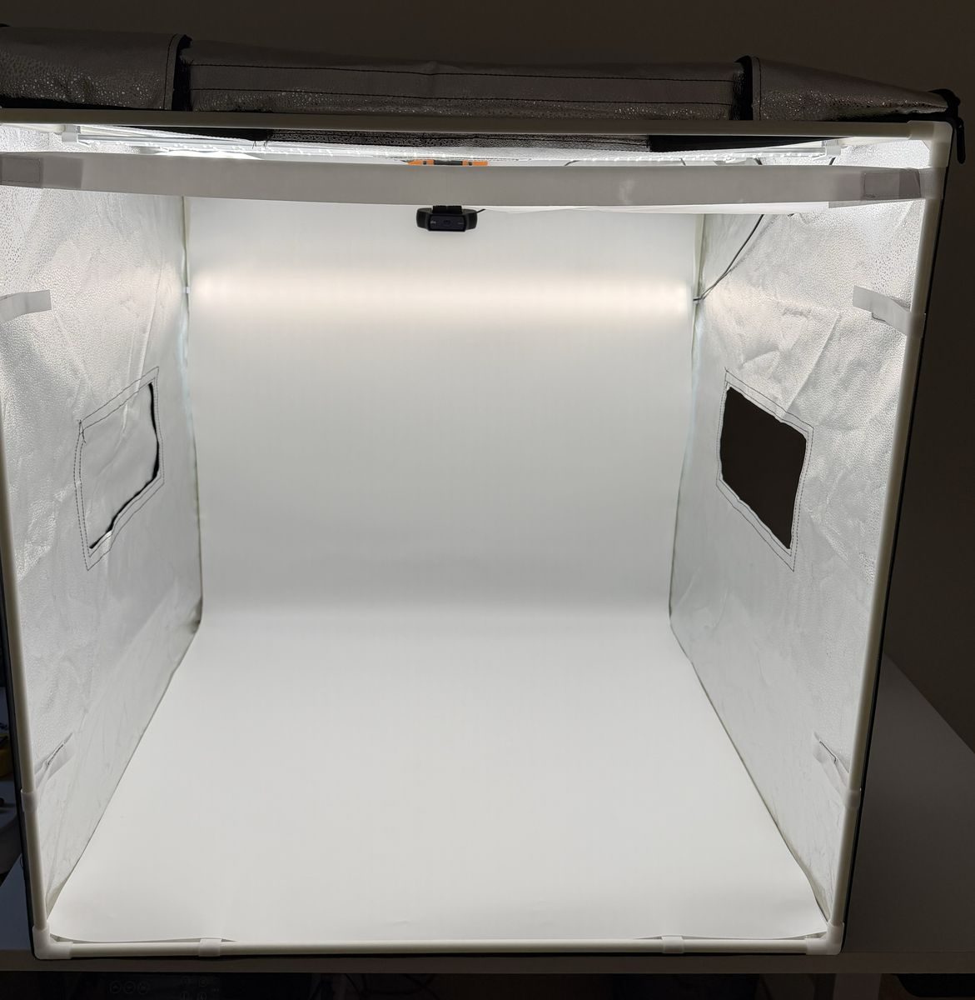
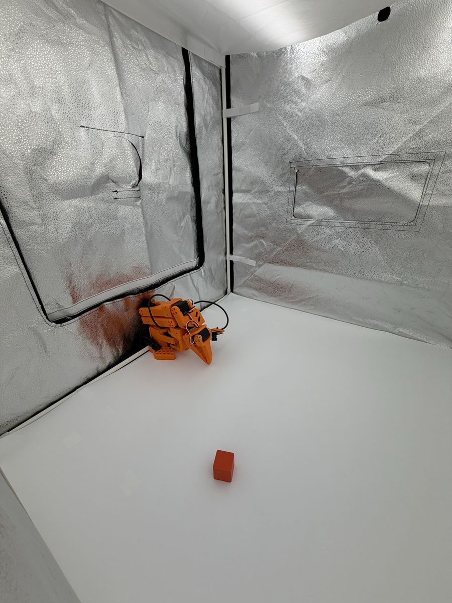
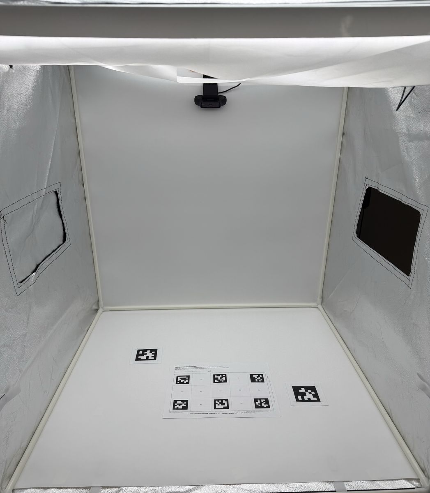
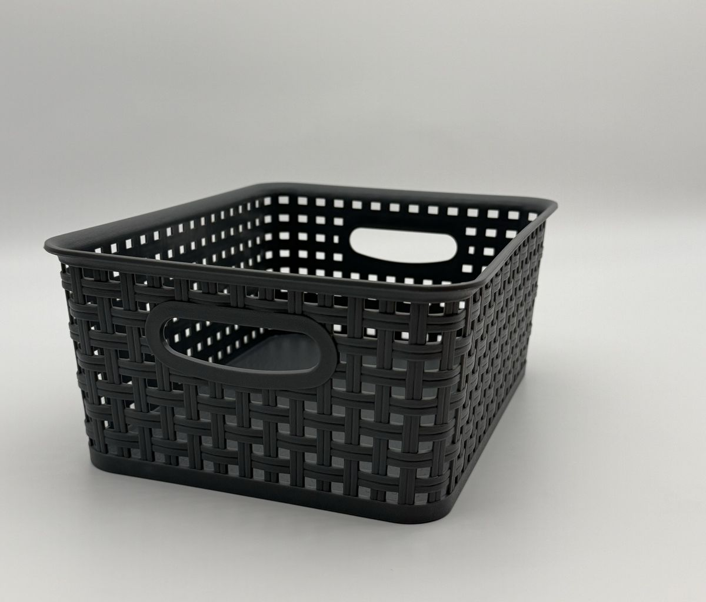

Demonstrations
Who ran the trial
Outcome
Success by distance from the nearest demonstration
How each reset was placed
Before every demonstration and every trial, I put the cube back with a camera overlay. It drew the target on the front camera's picture and showed how far the cube was from it. A placement counted only when the cube sat within 2 mm of its target, steady, with my hands clear, and I pressed the go key.
Where the grid sits on the table

The setup
The arm worked inside a light box, with the basket and the two AprilTags on its white floor. I took the photos while I set it up on October 5 and 6, 2026, and the clip during a pilot run of the clustered policy on October 8.




The trials as a table
The same trials as a table
| Trial | Who ran it | Cell | From the nearest demonstration | Outcome | Scorer's note at the rig |
|---|